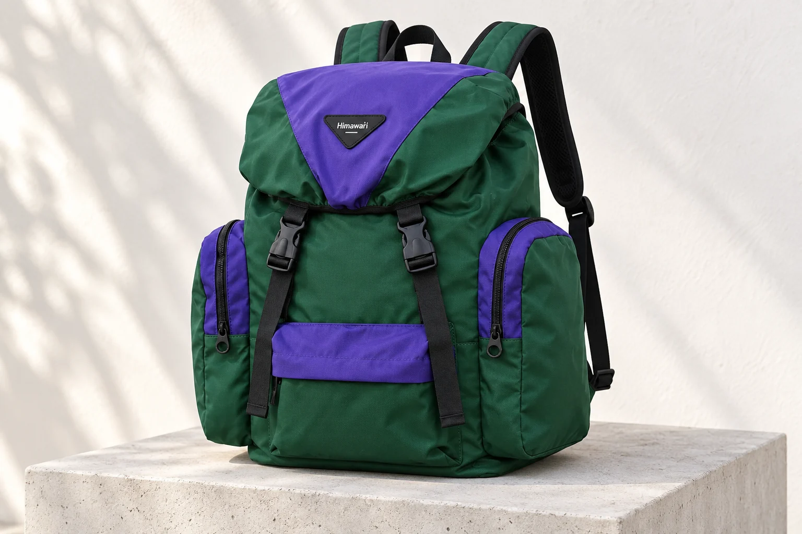
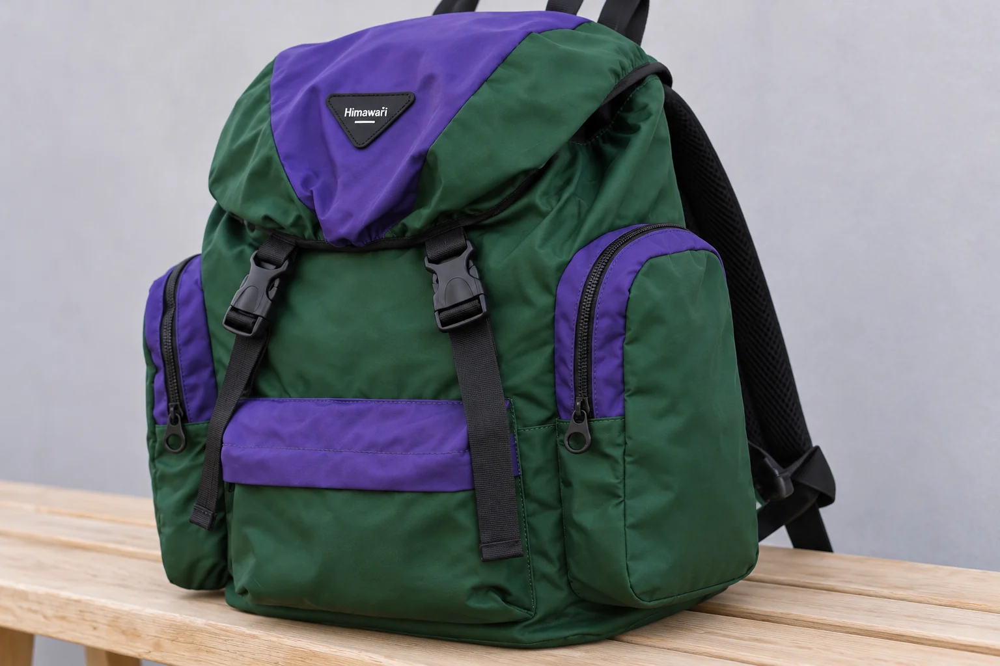

백팩 지퍼의 잠금, 자물쇠를 걸 수 있다는 뜻일까

여행용 백팩을 고르다가 지퍼에 잠금 기능이 있다는 설명을 만나면 작은 자물쇠를 떠올릴 수 있습니다.
그런데 부품 자료에서 말하는 잠금은 손잡이를 놓았을 때 슬라이더가 제자리에 머물도록 하는 기능일 때도 있습니다. 두 설명은 같은 질문에 답하지 않습니다. 이동 중 지퍼가 스스로 움직이는 것을 막고 싶은지, 별도 자물쇠를 연결하고 싶은지에 따라 필요한 제품 정보부터 달라집니다.
No.1111 그린의 실제 제품 사진에는 초록색 몸판, 보라색 덮개와 앞주머니 덮개, 두 개의 검정 버클이 보입니다. 양옆의 보라색 테두리를 따라 지퍼와 검정 손잡이도 드러납니다. 가방을 고르는 사람의 눈에는 이 부품들이 모두 여미는 장치로 묶일 수 있습니다. 하지만 덮개의 버클을 잠갔다는 말과 옆 지퍼의 슬라이더에 잠금 기능이 있다는 말은 각각 다른 부위를 가리킵니다. 이 사진은 위치를 짚는 예시이며 지퍼 내부 구조를 확인한 자료는 아닙니다.
손잡이를 당겨 풀리는 잠금
지퍼 선을 따라 움직이며 맞물림을 여닫는 몸체가 슬라이더입니다. 손으로 잡는 얇은 손잡이는 그 몸체에 연결됩니다. YKK의 잠금 원리 설명은 슬라이더 안의 핀이 맞물리는 부분에 걸리면 움직임이 멈추고 손잡이를 들어 핀이 올라가면 잠금이 풀리는 구조를 소개합니다. 잠금이라는 이름이 붙어 있어도 열쇠를 넣는 구멍이 필요한 방식은 아닙니다.
같은 자료의 자동 잠금 예시는 손잡이를 잡아 가볍게 당기는 동작으로 잠금을 해제합니다. YKK Americas의 FAQ도 자동 잠금 슬라이더는 손잡이를 당기기 전까지 내부 장치가 슬라이더의 위치를 유지한다고 설명합니다. 이 설명에서 자동이라는 말은 사용자가 손잡이를 놓거나 당기는 동작과 잠금이 이어진다는 뜻입니다. 비밀번호를 입력하거나 따로 해제 버튼을 찾는다는 뜻으로 읽으면 사용 모습을 잘못 그리게 됩니다.
백팩을 쓰는 장면에 대입하면 차이가 더 잘 드러납니다. 가방을 닫은 뒤 손을 뗐을 때의 슬라이더 상태와 물건을 꺼내려고 손잡이를 당길 때의 상태를 구별하는 기능입니다. 다른 사람이 그 손잡이를 잡을 수 있는지까지 구분하는 설명은 담겨 있지 않습니다. 자동 잠금 표기만으로 특정 사용자에게만 열리는 가방이라고 기대할 근거는 없습니다.
여기까지는 제조사가 공개한 부품 원리입니다. No.1111에 YKK 지퍼가 달렸는지, 옆주머니 지퍼가 자동 잠금 방식인지 확인된 정보는 없습니다. 손잡이가 아래로 놓인 모습이나 지퍼 선이 닫힌 사진은 내부 핀이 있다는 증거가 되지 않습니다. 원리를 이해하는 데 쓴 자료와 구매하려는 가방의 부품 사양은 따로 연결해야 합니다.
자물쇠 연결은 다른 사양
자물쇠를 쓰려는 사람은 연결할 부위가 마련되어 있는지를 알고 싶습니다. 자동 잠금 설명은 이 물음에 답하지 않습니다. 내부에서 슬라이더의 이동을 멈추는 장치가 있다는 사실과 외부 자물쇠를 연결하도록 만든 부위가 있다는 사실은 별개의 사양입니다. 하나가 확인됐다는 이유로 다른 하나를 사양표에 덧붙일 수 없습니다.
사진의 손잡이에 작은 구멍이 보여도 자물쇠용이라고 이름 붙이기는 이릅니다. 어느 부품끼리 연결하도록 안내됐는지, 사용할 자물쇠에 관한 조건이 있는지 알 수 없기 때문입니다. No.1111 원본에서도 검정 지퍼 손잡이의 윤곽은 보이지만 자물쇠를 연결한 상태나 해당 용도의 안내는 확인되지 않습니다. 확대해서 구멍 모양을 보는 것만으로 이 빈칸이 채워지지는 않습니다.
손잡이 두 개가 가까이 있는 사진도 같은 한계가 있습니다. 같은 지퍼에 달린 두 슬라이더인지, 각각 다른 입구의 손잡이인지에 따라 가리키는 여밈부터 달라집니다. 두 개가 나란히 보인다는 관찰은 자물쇠 대응 사양과 같지 않습니다. 손잡이를 모아 놓은 모양에 잠금이라는 이름을 붙이기 전에 제품의 기능 설명과 연결해 읽어야 합니다. 자물쇠를 연결한 사진이 있다면 그 사진이 같은 모델의 같은 입구를 보여 주는지도 함께 봅니다.
자물쇠 대응이 확인된 제품이라도 그 안내가 적용되는 입구를 읽어야 합니다. 큰 수납부에 관한 설명을 앞주머니나 옆주머니까지 넓히면 가방 전체가 같은 방식으로 잠긴다고 오해할 수 있습니다. 덮개와 버클, 여러 지퍼가 함께 있는 백팩일수록 이 차이가 남습니다. 닫힌 곳이 여러 군데 있다는 외형과 그중 자물쇠를 연결할 수 있는 입구가 어디인지는 구별되는 정보입니다.

구매 조건에 남길 잠금의 뜻
가방을 비교하는 표에 잠금 여부만 적으면 서로 다른 기능을 한 칸에서 비교하게 됩니다. 한 후보의 자동 잠금 슬라이더와 다른 후보의 자물쇠 연결 부위를 모두 있음으로 적을 수 있기 때문입니다. 자동 잠금 여부와 자물쇠 연결 가능 여부를 따로 적으면 구매 이유도 드러납니다. 평소 손잡이를 놓았을 때의 위치가 궁금한 사람과 여행 중 별도 자물쇠를 쓰려는 사람은 같은 표에서 서로 다른 항목을 보게 됩니다.
No.1111을 후보로 남긴 상태라면 옆주머니 사진의 보라색 지퍼 테두리를 기준으로 어느 입구를 말하는지 지정할 수 있습니다. 그 지퍼의 슬라이더가 자동 잠금 방식인지 묻고 받은 답변은 작동 방식에 관한 정보가 됩니다. 그곳에 자물쇠를 연결하도록 설계됐는지 묻고 받은 답변은 사용 가능한 부속과 연결 부위에 관한 정보가 됩니다. 판매자가 잠금 가능이라고 답하더라도 어느 뜻인지 빠져 있다면 아직 두 질문이 하나로 뭉쳐 있습니다.
제품 표에 자동 잠금 항목이 비어 있다면 미확인으로 남겨 둡니다. 기능이 없다는 안내와 아직 자료를 받지 못했다는 상태는 구매 비교표에서도 달라야 합니다. 자물쇠를 쓸 계획이 없다면 해당 호환 여부를 모든 백팩의 우열 기준으로 삼을 이유도 줄어듭니다. 원하는 사용 방식과 관계있는 항목을 남겨야 다른 장점을 가진 가방을 엉뚱한 기준으로 제외하지 않습니다.
방범 성능은 자동 잠금이나 자물쇠 대응이라는 단어만으로 판단할 수 없습니다. 이 두 표현은 각각 제한된 기능을 가리키며 가방 전체의 보호 성능을 입증하는 시험 결과가 아닙니다. 별도 성능을 기대한다면 해당 제품이 무엇을 어떤 조건으로 확인했는지까지 근거가 필요합니다. 잠금이라는 이름을 보았다는 이유만으로 소지품을 맡겨 두어도 된다는 결론을 붙이지 않습니다.
현재 No.1111에서 확인한 외부 크기는 가로 43 × 세로 47 × 폭 24cm입니다. 이 수치와 사진은 가방의 규모와 여밈 위치를 살필 자료로 쓸 수 있습니다. 지퍼 제조사, 자동 잠금 방식, 자물쇠 호환 여부는 확인 전으로 남습니다. 백팩을 고를 때 잠금 옆에 적을 말도 이처럼 구체적이면 됩니다. 손잡이를 놓았을 때의 작동을 원하는지, 지정된 부위에 자물쇠를 연결하려는지까지 적혀 있어야 판매 설명과 내가 기대한 기능을 같은 뜻으로 비교할 수 있습니다.